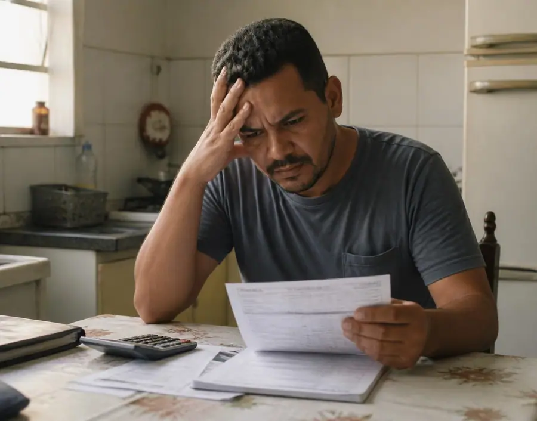
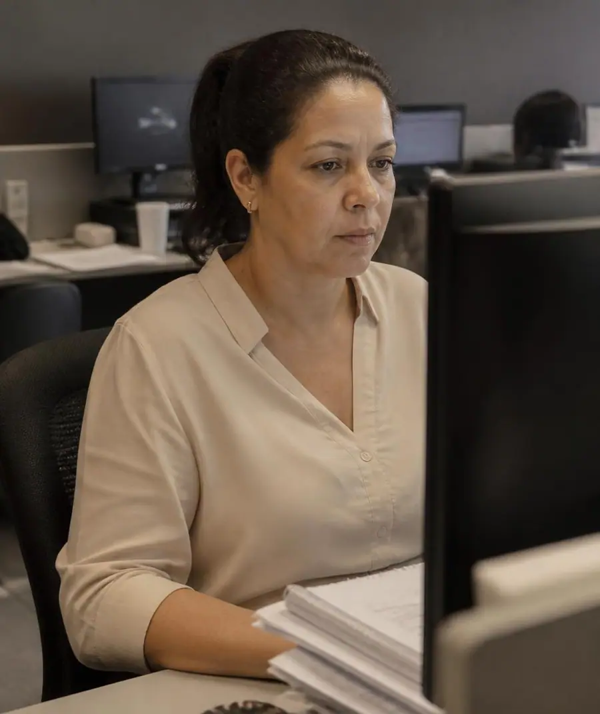

Paleta de cores
Medida no navegador: fundos ponderados pela área ocupada, textos pela quantidade de caracteres. Destaques reúnem cores saturadas e fundos de botão.
Fundos
rgb(9, 22, 46)
rgb(35, 39, 42)
rgb(37, 211, 102)
Textos
rgb(255, 255, 255)
Destaques
rgb(37, 211, 102)
Gradientes
linear-gradient(oklab(0.18 -0.00781417 -0.0443163 / 0.4) 0%, rgba(0, 0, 0, 0) 50%, oklab(0.18 -0.00781417 -0.0443164 / 0.9) 100%)radial-gradient(900px at 15% 20%, rgba(142, 109, 64, 0.18), rgba(0, 0, 0, 0) 55%), linear-gradient(rgba(9, 22, 46, 0.4) 0%, rgba(9, 22, 46, radial-gradient(1000px at 20% 0%, rgba(142, 109, 64, 0.22), rgba(0, 0, 0, 0) 50%), radial-gradient(800px at 100% 100%, rgba(142, 109, 64, 0.linear-gradient(oklch(0.985 0.005 70) 0%, oklch(0.93 0.012 70) 100%)linear-gradient(to top, rgb(9, 22, 46) 0%, oklab(0.203762 -0.00759041 -0.050869 / 0.5) 50%, rgba(0, 0, 0, 0) 100%)Tipografia
Escala usada (desktop 1440px)
| Tamanho | Peso | Família | Amostra |
|---|---|---|---|
| 72px | 400 | Instrument Serif | Texto de exemplo |
| 48px | 400 | Instrument Serif | Texto de exemplo |
| 24px | 400 | Instrument Serif | Texto de exemplo |
| 20px | 500 | Montserrat | Texto de exemplo |
| 20px | 400 | Instrument Serif | Texto de exemplo |
| 18px | 400 | Manrope | Texto de exemplo |
| 16px | 400 | Manrope | Texto de exemplo |
| 14px | 400 | Manrope | Texto de exemplo |
| 14px | 500 | Manrope | Texto de exemplo |
| 12px | 400 | Manrope | Texto de exemplo |
Mobile (390px): 48px/400, 36px/400, 30px/400, 24px/400, 20px/400, 18px/400, 16px/400, 16px/500 · H1 no mobile: 12px
Tags
| Tag | Família | Tamanho | Peso | Altura de linha | Espaçamento | Caixa | Cor |
|---|---|---|---|---|---|---|---|
| <h1> | Instrument Serif | 12px | 400 | 16px | 2.4px | uppercase | |
| <h2> | Instrument Serif | 48px | 400 | 48px | -0.72px | none | #FFFFFF |
| <h3> | Instrument Serif | 24px | 400 | 32px | -0.36px | none | #FFFFFF |
| <p> | Manrope | 14px | 400 | 22.75px | normal | none |
Botões
Recriados com os estilos computados reais. Efeitos de hover e animação não aparecem aqui; veja a seção de animações.
fundo #25D366 · texto #FFFFFF · raio 3.35544e+07px · padding 14px 28px · 14px/500 none · 5x na páginafundo #00000000 · texto None · raio 0px · padding 24px 0px · 16px/400 none · 5x na páginafundo #25D366 · texto #FFFFFF · raio 3.35544e+07px · padding 8px 20px · 14px/400 none · 1x na páginaCards e containers
Verbas rescisórias Diferenças rescisórias, férias, 13º salário, FGTS e multas.
raio 20px · sombra none · borda 1px solid oklab(0.999994 0.0000455678 0.0000200868 / 0.1) · 371x228pxCLT Garantia dos principais direitos dos trabalhadores durante e após o contrato de trabal
raio 20px · sombra none · borda 1px solid oklch(0.88 0.012 70) · 371x210px01 Análise inicial Entendemos sua situação e avaliamos os documentos disponíveis.
raio 20px · sombra none · borda 1px solid oklab(0.999994 0.0000455678 0.0000200868 / 0.1) · 211x249px01 Trabalhadores demitidos Que desejam revisar o cálculo da rescisão e verificar possíveis
raio 20px · sombra none · borda 1px solid oklab(0.999994 0.0000455678 0.0000200868 / 0.1) · 270x453pxBordas, raios e sombras
Sombras
oklab(0.18 -0.00781417 -0.0443164 / 0.3) 0px 20px 60px -20pxoklab(0.18 -0.00781417 -0.0443164 / 0.08) 0px 1px 3px 0px, oklab(0.18 -0.00781417 -0.0443164 / 0.14) 0px 10px 30px -12pxrgba(0, 0, 0, 0) 0px 0px 0px 0px, rgba(0, 0, 0, 0) 0px 0px 0px 0px, rgba(0, 0, 0, 0) 0px 0px 0px 0px, oklab(0.999994 0.0000455678 0.0000200868 / 0.1) 0px 0px 0px 1px, rgba(0, 0, 0, 0.25) 0px 25px 50pxEspaçamentos
- Largura do conteúdo mais comum: 1200px
- Padding vertical das seções (topo/base): 128px/128px (9x), 0px/0px (1x)
- Gaps mais usados (flex/grid): 12px, 8px, 24px, 56px, 16px, 20px
- Altura total da página: 8319px em 10 seções
Estrutura e ritmo de cores das seções
Cada faixa é uma seção de topo, com altura proporcional e a cor ou imagem de fundo real.
Animações, ícones e bibliotecas
- Keyframes próprios: accordion-down, accordion-up, caret-blink, enter, exit, ping, pulse
- Animações de entrada do Elementor: nenhuma
- Classes de scroll reveal da casa: nenhuma
- Ícones: 46 SVG, 0 ícones de fonte
- Bibliotecas e tags detectadas: ga4
Snippets da biblioteca presentes nesta página
- Nenhum snippet da biblioteca identificado.
Imagens do site

